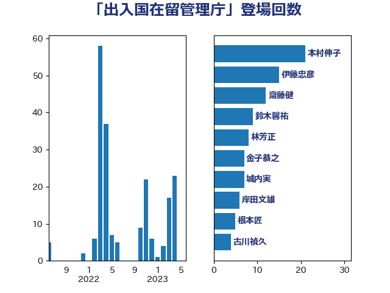

単語「出入国在留管理庁」

| 本村伸子 | 日本共産党 | 21 回 |
| 伊藤忠彦 | 自由民主党 | 15 回 |
| 齋藤健 | 自由民主党 | 12 回 |
| 鈴木馨祐 | 自由民主党 | 9 回 |
| 林芳正 | 自由民主党 | 8 回 |
| 金子恭之 | 自由民主党 | 7 回 |
| 城内実 | 自由民主党 | 7 回 |
| 岸田文雄 | 自由民主党 | 6 回 |
| 根本匠 | 自由民主党 | 5 回 |
| 古川禎久 | 自由民主党 | 4 回 |
| 伊藤岳 | 日本共産党 | 3 回 |
| 高良鉄美 | 無所属 | 2 回 |
| 馬場成志 | 自由民主党 | 2 回 |
| 輿水恵一 | 公明党 | 2 回 |
| 西岡秀子 | 国民民主党 | 2 回 |
| 葉梨康弘 | 自由民主党 | 2 回 |
| 枝野幸男 | 立憲民主党 | 2 回 |
| 東徹 | 日本維新の会 | 2 回 |
| 三ッ林裕巳 | 自由民主党 | 2 回 |
| 鬼木誠 | 立憲民主党 | 1 回 |
| 阿部知子 | 立憲民主党 | 1 回 |
| 赤羽一嘉 | 公明党 | 1 回 |
| 谷公一 | 自由民主党 | 1 回 |
| 藤岡隆雄 | 立憲民主党 | 1 回 |
| 若松謙維 | 公明党 | 1 回 |
| 義家弘介 | 自由民主党 | 1 回 |
| 米山隆一 | 立憲民主党 | 1 回 |
| 田所嘉徳 | 自由民主党 | 1 回 |
| 田名部匡代 | 立憲民主党 | 1 回 |
| 田中昌史 | 自由民主党 | 1 回 |
| 清水真人 | 自由民主党 | 1 回 |
| 津島淳 | 自由民主党 | 1 回 |
| 河野太郎 | 自由民主党 | 1 回 |
| 沢田良 | 日本維新の会 | 1 回 |
| 松本剛明 | 自由民主党 | 1 回 |
| 末松信介 | 自由民主党 | 1 回 |
| 木原誠二 | 自由民主党 | 1 回 |
| 岬麻紀 | 日本維新の会 | 1 回 |
| 山田勝彦 | 立憲民主党 | 1 回 |
| 山下貴司 | 自由民主党 | 1 回 |
| 尾崎正直 | 自由民主党 | 1 回 |
| 小里泰弘 | 自由民主党 | 1 回 |
| 小田原潔 | 自由民主党 | 1 回 |
| 小沢雅仁 | 立憲民主党 | 1 回 |
| 大塚拓 | 自由民主党 | 1 回 |
| 和田政宗 | 自由民主党 | 1 回 |
| 吉田はるみ | 立憲民主党 | 1 回 |
| 古屋範子 | 公明党 | 1 回 |
| 加田裕之 | 自由民主党 | 1 回 |